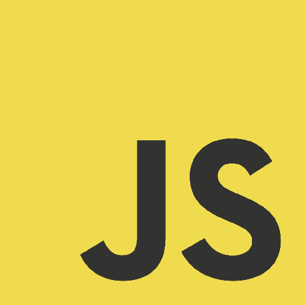
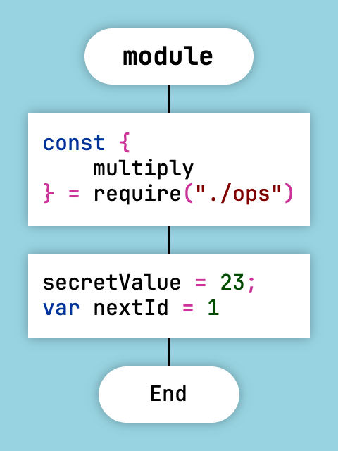
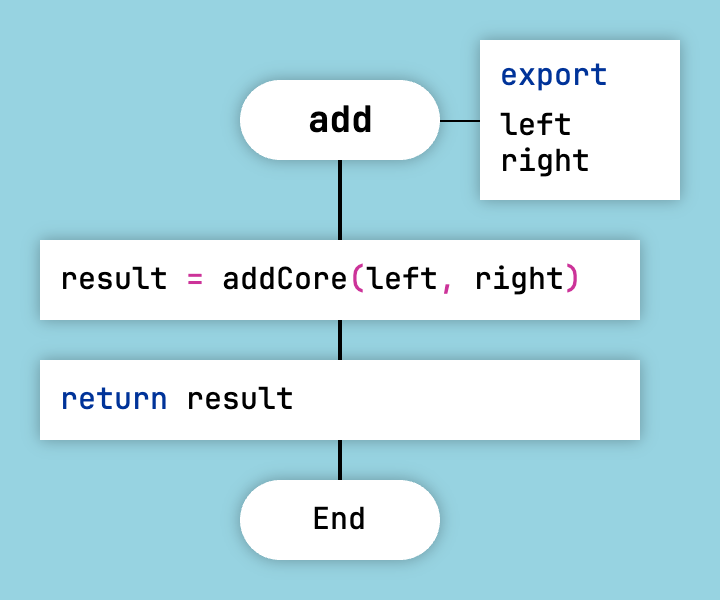
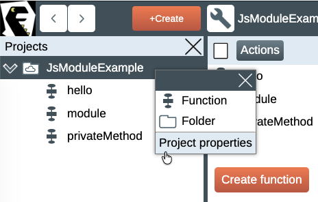
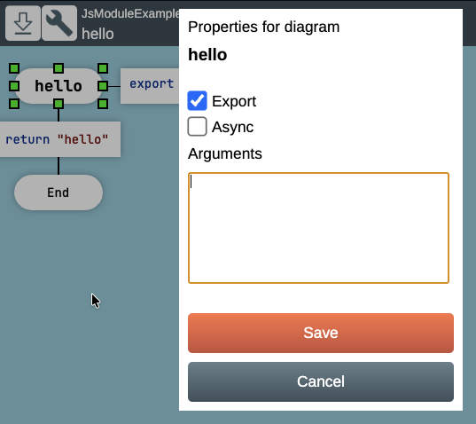
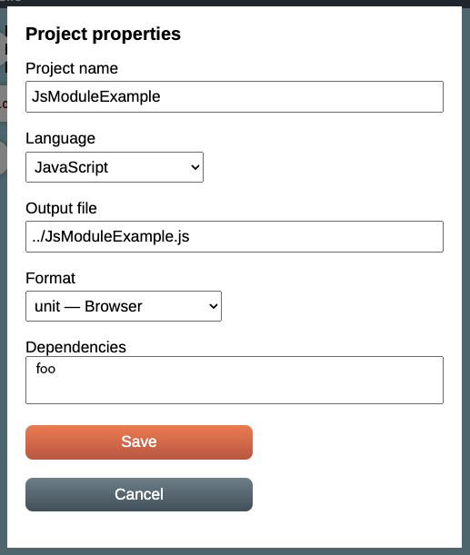

Generating JavaScript Code

Programming in JavaScript is easy and enjoyable, but on one condition. That condition is: use the good parts of the language and avoid the bad ones.
When generating JavaScript code, DrakonTech tries to avoid the bad parts. For example, it does not use the new, class, or this keywords.
Instead, the code generator produces ordinary functions that Douglas Crockford would probably approve of.
DrakonTech supports classes and object-oriented programming, but without the class keyword.
The module Function
A function with the special name module contains any code that will be inserted at the beginning of the generated JavaScript file.
Examples include constants and global variables, require expressions, and module initialization code.

Example of the special module function
In this example, the variable nextId is declared explicitly, while secretValue is declared implicitly.
Automatic Variable Declarations
In all JavaScript functions except the special module function, variable declarations are forbidden. In other words, the var, const, and let keywords cannot be used.
The code generator declares variables automatically, in the style of Python. If you need a variable, simply assign a value to it. The generator will automatically create a variable declaration inside the function body using the var keyword.
Variable declarations are allowed inside the module function.
If you need to declare a constant, place it inside the module function.
Automatic variable declarations work in all module formats.

Automatic variable declarations
For the diagram above, DrakonTech will generate a function that automatically declares the local variable result.
function add(left, right) { var result; result = addCore(left, right); return result; }
DrakonTech creates local variables not only in function bodies, but also inside closures.
Module Formats
DrakonTech supports three JavaScript module formats:
- CommonJS
- IIFE
- unit
The module format is selected when the project is created.
For an existing project, the format can be changed in the project properties. To do this, right-click the root folder in the project tree on the left and select Project Properties.

Project properties
The main difference between module types is how functions are exported.
To export a function, open the corresponding diagram, right-click its title, and select Properties from the context menu. Then check the Export checkbox.

Exporting a function
CommonJS
CommonJS is a format originally designed for Node.js, but it can also be used in the browser. To use CommonJS modules in a browser, they must be processed by tools such as browserify. IIFE and unit modules can be loaded directly in the browser without modification.
A module generated in the CommonJS format looks like this:
privateMethod(); function hello() { return 'hello'; } function privateMethod() { console.log('meou'); } module.exports = { hello };
Here, the hello() function is exported through module.exports.
The privateMethod() function is called from the module() function, so its invocation appears at the beginning of the file.
To import modules, add an Action icon to the body of the module function. Insert the required require() expressions into that icon.
IIFE
IIFE (Immediately Invoked Function Expression) is an idiom that allows code to run in a browser without polluting the global window object with unwanted variables.
A module generated in the IIFE format looks like this. It is an anonymous function that is executed immediately after it is declared.
(function() { privateMethod(); function hello() { return 'hello'; } function privateMethod() { console.log('meou'); } window.hello = hello; })();
The privateMethod() function is also invoked at the beginning of the file.
Here, the hello() function is exported by assigning it to the window object.
unit
A unit module creates one large function that contains the entire module. This function is placed in the global object and is accessible everywhere.
The function creates and returns an object that contains the exported functions.
function JsModuleExample() { var unit = {}; privateMethod(); function hello() { return 'hello'; } function privateMethod() { console.log('meou'); } unit.hello = hello; return unit; } if (typeof module !== "undefined" && module.exports) { module.exports = { JsModuleExample }; }
For a unit module, dependencies can be defined. A dependency is a variable inside the module that is available to all functions in the module. It may contain a configuration value or a reference to an object, such as another module. To assign a value to such a variable, write the value into a module property with the same name. DrakonTech will generate a setter that stores the value assigned to that property into the corresponding variable.

Adding a dependency to a module
Here, a dependency named foo has been added to the module.
Example: satisfying dependencies (in application initialization code).
var foo = FooModule(); var example = JsModuleExample(); example.foo = foo;
Example: using dependencies (inside the JsModuleExample module).
foo.greetings();
Dependencies can be cyclic because they are assigned through late binding.
The unit format has several advantages:
- It works in both CommonJS and browsers without additional modifications.
- unit allows you to create multiple instances of a module and maintain complete control over them.
- Module dependencies can be managed at runtime. This is much more convenient than the rigid require() or import model.